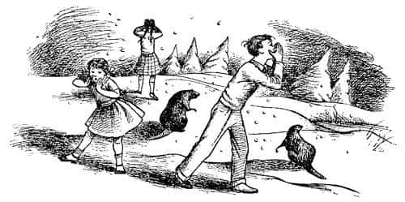

Akşam Yemeğinden Sonra Olanlar
“Şimdi” dedi Lucy, “Bay Tumnus’a ne olduğunu anlat bize lütfen.”
“Ah, bu çok kötü” dedi Bay Kunduz, başını sallayarak. “Bu çok, çok kötü bir iş. Polisin onu götürdüğüne hiç kuşku yok. Ben bunu, olayı gören bir kuştan öğrendim.”
“Ama onu nereye götürdüler ki?” diye sordu Lucy.
“Şey, en son kuzeye doğru giderken görülmüşler ve hepimiz bunun ne anlama geldiğini biliriz.”
“Hayır, biz bilmiyoruz” dedi Susan. Bay Kunduz başını sıkıntılı bir şekilde salladı.
“Korkarım bu onu, onun evine götürdükleri anlamına geliyor” dedi.
“Sizce ona ne yapacaklar, Bay Kunduz?” diye sordu Lucy.
“Şey” dedi Bay Kunduz, “emin olduğumuzu söyleyemeyiz. Fakat oraya götürülüp de dönen pek yoktur. Heykeller. Diyorlar ki ev heykellerle dolu – bahçe, merdivenler ve koridor taşa çevirdiği (titreyerek durakladı) kişilerle dolu.”
“Fakat Bay Kunduz” dedi Lucy, “biz – biz onu kurtarmak için bir şeyler yapmalıyız. Bu çok korkunç ve hep benim yüzümden.”
“Eğer mümkün olsaydı onu kurtaracağınızdan hiç kuşkum yok tatlım” dedi Bayan Kunduz. “Fakat onun izni olmaksızın o eve girip yeniden canlı olarak çıkma şansınız yok.”
“Bir plan yapamaz mıyız?” dedi Peter. “Demek istiyorum ki bir şey kılığına girelim ya da bir şeyler olduğumuzu varsayıp – seyyar satıcı ya da herhangi bir şey – ya da o, evi terk edene kadar bekleyip – ya da – off! Hepsini boşverin, bir yolu olmalı. Bu Faun kendisini tehlikeye atarak benim kız kardeşimi kurtardı Bay Kunduz. Başına gelecekleri bile bile onu bırakamayız.”
“İşe yaramaz Âdemoğlu” dedi Bay Kunduz, “tüm insanların, hele hele senin denemen hiçbir işe yaramaz. Fakat şimdi Aslan harekete geçtiğine göre—”
“Ah, evet! Bize Aslan’dan söz et!” dediler aynı anda; çünkü bir kez daha o tuhaf duygu kaplamıştı benliklerini – baharın ilk belirtilerini görmüş ya da müjdeli bir haber almış gibi.
“Aslan kim?” diye sordu Susan.
“Aslan?” dedi Bay Kunduz, “Bilmiyor musunuz? O Kral’dır. Bütün ormanın efendisidir o, fakat buraya pek sık gelmez, anlarsınız. Benim ya da babamın zamanında hiç gelmedi. Fakat geri döndüğünü duyduk. Şu anda Narnia’da. Beyaz Kraliçe’nin hesabını o görecek. Bay Tumnus’u da siz değil, o kurtaracak.”
“Kraliçe, Aslan’ı da taşa çevirmez mi?” dedi Edmund.
“Sevsinler seni Âdemoğlu, ne de kolay söyledin!” diye cevapladı Bay Kunduz kocaman bir kahkahayla. “Onu taşa çevirmek mi? Ayakta kalıp onun yüzüne bakabilirse ne âlâ. Ben, bunu bile yapabileceğini sanmıyorum ya… Beklediğimden de fazla bir şey. Hayır, hayır. Bu taraflarda bilinen eski bir şiirde söylendiği gibi, o her şeyi düzeltecek:
Aslan görününce düzelecek yanlışlar
Kükremesiyle, yok olacak keder
Dişini gösterince ölümünü görecek kış
Yelesini sallayınca yeniden gelecek bahar.
Onu görünce anlarsınız.”
“Peki biz onu görecek miyiz?” diye sordu Susan.
“Elbette Havvakızı, sizi buraya bunun için getirdim. Sizi, onunla buluşacağınız yere götürmekle görevlendirildim” dedi Bay Kunduz.
“O – o bir insan mı?” diye sordu Lucy:
“Aslan bir insan ha!” dedi Bay Kunduz ciddiyetle. “Tabii ki değil. O, Ormanların Kralı ve Denizlerin Ötesindeki Büyük İmparatorun Oğlu’dur. Hayvanlar Kralı’nın kim olduğunu bilmiyor musunuz? Aslan. En büyük Aslan’dır.”
“Oh!” dedi Susan, “Ben onun bir insan olduğunu sanmıştım. Güvenilir mi? Bir Aslan’la buluşmak beni epeyce ürkütüyor.”
“Elbette ürkeceksin tatlım ve sakın yanlış anlama” dedi Bayan Kunduz, “Aslan’a dizleri titremeden görünebilen biri varsa ya birçok insandan daha cesurdur ya da sadece aptal.”
“Öyleyse güvenilir değil” dedi Lucy.
“Güvenilir mi?” dedi Bay Kunduz, “Bayan Kunduz’un size dediklerini duymadınız mı? Güvenilirliği üstüne kimse bir şey dedi mi? Elbette güvenilir değil. Fakat o iyidir. O, Kralımızdır. Size söylüyorum.”
“Onu görmeyi çok istiyorum” dedi Peter, “gerçeği söylemek gerekirse, ondan korktuğumu hissetsem bile.”
“Doğru, Âdemoğlu” dedi Bay Kunduz, masaya, bütün bardakları ve tabakları sarsan bir pençe vuruşuyla. “Ve göreceksin de. Yarın, eğer mümkünse, Taş Masa’da onunla buluşmanız için haber gönderildi.
“Nerede o?” dedi Lucy.
“Ben size göstereceğim” dedi Bay Kunduz. “Nehrin aşağı yakasında, buradan oldukça uzakta. Sizi oraya götüreceğim.”
“Fakat bu arada zavallı Bay Tumnus’a ne olacak?” dedi Lucy.
“Ona en çabuk bir şekilde yardım etmenin yolu Aslan’la buluşmanızdır” dedi Bay Kunduz, “o bizimle beraber olduğunda bir şeyler yapmaya başlayabiliriz. Bu, size ihtiyacımız yok anlamına gelmez. Çünkü bir başka şiir şöyle diyor:
Âdem’in kemikleri ve Âdem’in eti
Cair Paravel’deki tahta oturunca
Kötü zamanlar bitmiş, gitmiş olacak.
Siz ve o geldiğine göre olayların sonuna yaklaştık şimdi. Aslan’ın bu taraflara daha önce de – çok önce – geldiğini duymuştuk, ama ne zaman geldiğini kimse bilmiyor. Fakat daha önce sizin soyunuzdan kimse buraya gelmemişti.”
“Bunu ben de anlayamıyorum Bay Kunduz” dedi Peter, “Yani demek istiyorum ki, Cadı bir insan değil mi?”
“O buna inanmamızı istiyor” dedi Bay Kunduz, “Ve kraliçe olma iddiasını buna dayandırıyor. Fakat o bir Havvakızı değil. O, babanız Âdem’in (Burada Bay Kunduz başını eğdi) ilk karısından gelmektedir, ona Lilith derlerdi. Ve o bir cindi. Bir tarafı cinlerden gelmekteydi. Diğer tarafı devlerdi. Hayır, hayır, Cadı’nın kanında bir damla bile insan kanı yok.”
“Kötülüğün iliklerine kadar işlemesinin nedeni de bu, Bay Kunduz” dedi Bayan Kunduz.
“Doğru, Bayan Kunduz” dedi. “İnsanlar hakkında iki farklı görüş olabilir (şu anda burada bulunanları kastetmiyorum). Fakat insan gibi görünüp de insan olmayanlar hakkında sadece tek görüş vardır.”
“Bildiğim iyi cüceler de var” dedi Bayan Kunduz.
“Sen söz edince aklıma geldi; benim de var” dedi kocası “ne var ki çok az sayıda ve insana en az benzeyenler de onlar. Yine de her zaman, (nasihatlerime kulak verin) insan olabilecek ama henüz olmamış, ya da geçmişte insan olup da şimdi olmayan, ya da insan olması gerekirken olmayanlarla karşılaştığınızda gözlerinizi ondan, elinizi de baltanızdan ayırmayın. Cadı’nın Narnia’da sürekli insan aramasının nedeni de bu. Bunca yıldır sizi bekliyordu ve sizin dört kişi olduğunuzu bilseydi çok daha tehlikeli olurdu.”
“Bunun bizimle ilgisi ne peki?” dedi Peter.
“Bir başka kehanet yüzünden” dedi Bay Kunduz. “Aşağıda Cair Paravel’de – orası, deniz kıyısında, bu nehrin ağzındadır. Her şey gerektiği gibi olsaydı, tüm ülkenin başşehri olması gereken kaledir – dört tane taht var ve Narnia’da çok eskiden beri denir ki iki Âdemoğlu ile iki Havvakızı o dört tahta oturduğunda, bu sadece Beyaz Cadı’nın hükümranlığının sonu değil, onun yaşamının da sonu olacak. Buraya gelirken dikkatli olmamızın nedeni buydu, çünkü o, dördünüzün burada olduğunu bilseydi yaşamınızın bıyığımın bir kılı kadar değeri olmazdı!”
Tüm çocuklar Bay Kunduz’un anlattıklarını o kadar dikkatle dinliyorlardı ki, uzun süre başka hiçbir şeyi fark etmemişlerdi. O, sözlerini bitirdikten sonraki sessizlik anında Lucy dedi ki:
“Hey, Edmund nerede?”
Korkunç bir sessizlik oldu ve sonra herkes birbirine sormaya başladı: “En son kim gördü? Ne zamandır kayıp? Dışarıda mı?” Daha sonra kapıya koşup dışarıya baktılar. Kar lapa lapa yağıyordu… Havuzun yeşil buzları beyaz bir örtü altında kaybolmuştu. Küçük evin bulunduğu bendin ortasından iki kıyıyı da görmek çok zordu. Yumuşak, yeni yağmış karda bileklerine kadar batarak dışarıya çıktılar ve evin çevresindeki her yere baktılar. Sesleri kısılana kadar “Edmund! Edmund!” diye bağırdılar. Ancak sessizce düşen kar, seslerini boğuyor, yankı bile duymuyorlardı.

“Ne kötü!” dedi Susan, sonunda umutsuzca içeri girdiklerinde. “Of, keşke buraya gelmeseydik.”
“Ne yapacağız şimdi Bay Kunduz?” dedi Peter.
“Ne mi yapacağız?” dedi kar çizmelerini giymekte olan Bay Kunduz, “Ne mi yapacağız? Hemen burayı terk etmeliyiz. Kaybedecek bir anımız bile yok!”
“Dört arama grubu oluştursak iyi olur” dedi Peter, “ve herkes farklı yönlerde yürüsün. Onu kim bulursa hemen geri gelmeli ve—”
“Arama grubu mu dedin Âdemoğlu?” dedi Bay Kunduz, “Ne için?”
“Kuşkusuz Edmund’u aramak için!”
“Onu aramanın bir faydası yok” dedi Bay Kunduz.
“Ne demek istiyorsun?” dedi Susan. “Henüz çok uzaklaşmış olamaz ve onu bulmamız gerekiyor. Onu aramanın faydası yok demekle ne demek istiyorsun?”
“Aramanın faydası olmamasının nedeni” dedi Bay Kunduz, “nereye gittiğini bilmemizdir!” Herkes şaşkınlıkla baktı. “Anlamıyor musunuz?” dedi Bay Kunduz, “onun yanına gitti, Beyaz Cadı’nın yanına. Hepimize ihanet etti.”
“Emin misiniz – gerçekten mi?” dedi Susan, “Bunu yapmış olamaz.”
“Olamaz mı?” dedi Bay Kunduz üç çocuğa dikkatle bakarak. O an çocukların söylemek istedikleri her şey boğazlarında düğümlendi, çünkü her biri Edmund’un tam da öyle yaptığını içten içe hissetmişlerdi.
“Peki, yolu nereden biliyor?” dedi Peter.
“Bu ülkeye daha önce gelmiş miydi?” diye sordu Bay Kunduz, “Buraya hiç yalnız gelmiş miydi?”
“Evet” dedi Lucy kısık bir sesle. “Korkarım geldi.”
“Ne yaptığını ya da kiminle karşılaştığını sana söyledi mi?”
“Şey, hayır, söylemedi” dedi Lucy.
“Öyleyse şu sözlerimi belleyin” dedi Bay Kunduz, “O, Beyaz Cadı’yla karşılaştı, onun tarafına katıldı ve Cadı’nın nerede yaşadığını da öğrendi. Daha önce söylemekten kaçındım (kardeşiniz olması nedeniyle) fakat kardeşinize ilk baktığım anda kendi kendime ‘güvenilmez’ dedim. Cadı’yla beraber olup onun yemeğini yemiş birinin görüntüsü vardı onda. Narnia’da uzun süre yaşadıysanız, bakışlardan bunu her zaman anlayabilirsiniz.”
“Hiç fark etmez” dedi Peter boğulurcasına bir sesle, “yine de gidip onu aramamız gerekiyor. Her şeye karşın bizim kardeşimiz, küçük bir canavar olsa bile. O sadece bir çocuk!”
“Cadı’nın evine gidelim mi diyorsun?” dedi Bay Kunduz, “Onu ya da kendinizi kurtarmanın tek yolunun Cadı’dan uzakta durmak olduğunu görmüyor musunuz?”
“Ne demek istiyorsun?” dedi Lucy.
“O, dördünüzü birden istiyor (Cair Paravel’deki dört tahtı düşünüyor hep). Dördünüz beraber onun evine girdiğinizde görevi tamamlanmış olacak – siz konuşmaya fırsat bile bulamadan onun koleksiyonuna dört tane yeni heykel katılır. Fakat elinde tek kişi olduğu sürece onu canlı tutmak zorunda. Çünkü onu tuzak olarak, sizi yakalamak için yem olarak kullanmak isteyecektir.”
Lucy ağlayarak “Ah, bize kimse yardım edemez mi?” dedi.
“Sadece Aslan” dedi Bay Kunduz, “gidip onunla buluşmalıyız. Artık bu bizim tek şansımız.”
“Bana öyle görünüyor ki, sevgili çocuklar” dedi Bayan Kunduz, “onun bizi ne zaman gizlice terk ettiğini bilmemiz çok önemli. Cadı’ya neleri anlatacağı bizi ne kadar dinlediğine bağlı. Örneğin, o gitmeden önce Aslan’dan söz etmeye başlamış mıydık? Eğer söz etmediysek çok iyi durumdayız demektir. Çünkü Aslan’ın Narnia’ya geldiğini ya da bizim onunla buluşacağımızı bilemez, böylece Cadı bu konuda tamamen hazırlıksız olur.”
“Aslan’dan söz ederken galiba burada değildi—” diye başladı Peter, fakat Lucy sözünü kesti.
“Evet, buradaydı” dedi mutsuzca, “hatırlamıyor musunuz; Cadı’nın Aslan’ı da taşa çevirip çeviremeyeceğini soran oydu.”
“Evet, oydu gerçekten” dedi Peter, “tam da onun soracağı türden bir soru!”
“Durum gittikçe kötüleşiyor” dedi Bay Kunduz, “sonra şu da var; Aslan’la buluşma yerinin Taş Masa olduğunu söylediğimde burada mıydı?”
Kuşkusuz bu sorunun cevabını kimse bilmiyordu.
“Çünkü eğer burada idiyse” diye devam etti Bay Kunduz, “Cadı, kızağıyla o yöne doğru gidip Taş Masa’ya varmadan yolumuzu kesecek ve bizi yakalayacaktır.”
“Ancak tanıdığım kadarıyla yapacağı ilk şey bu olmayacak” dedi Bayan Kunduz. “Edmund ona burada olduğumuzu söylediği an bizi bu gece yakalamak üzere yola çıkacaktır. Eğer Edmund gideli yarım saat olduysa, Cadı yaklaşık yirmi dakika sonra burada olacaktır.”
“Haklısın Bayan Kunduz” dedi kocası, “hepimiz buradan uzaklaşmalıyız. Kaybedecek bir saniyemiz bile yok.”